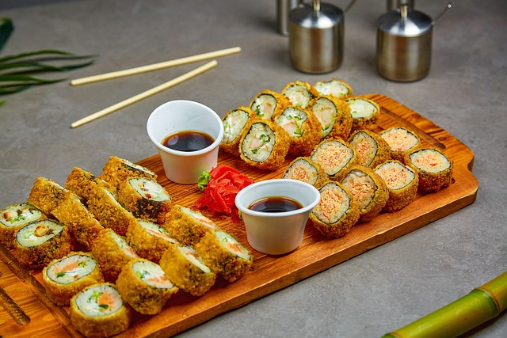
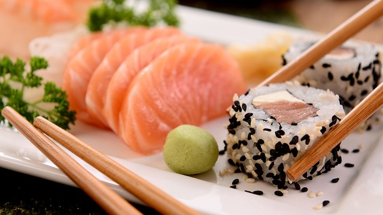

Eu atualmente trabalho em um restaurante de comida japonesa,
A carga horaria é das 18:00 até as 23:00.
Lá tive grande aprendizado, aprendi a diferenciar cada prato e
nome das pequenas peças da culinária japonesa, exemplo:

O Hotroll é um exemplo perfeito, uma peça bem conhecida na culinária japonesa
sendo um dos mais pedidos por muitos e novamente, conhecido por vários
